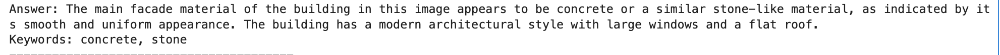
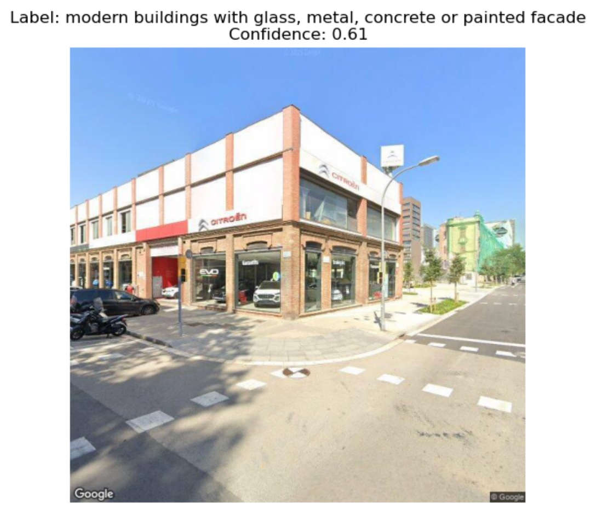

Multimodal Reasoning
Related API: ccai9012.multi_modal_utils · ccai9012.svi_utils · ccai9012.viz_utils
Overview
Category: Visual-Language Reasoning
Modular Components: - Model Initialization (API calling/Local implementation) - Image Captioning - Keyword Extraction from Text
Use Cases
- Do AI models associate certain architectural styles with particular geographic regions unfairly?
- Urban light pollution areas spotting based on facade material analysis
- Can we visualize gentrification through facade transformation using historical vs. recent street views?
- Thermal defect spotting based on facade and indoor infrared images
Code Examples
Material Bias in AI-generated Architectural Images
Content: - Use Text2Image to generate images of buildings - Generate lots of images - Parse images

Using BLIP to identify the facade material from the images generated from StableDiffusion.
Assessment of Conservation Status in Urban Historic Districts
Content: - Categorizing SVIs of historic districts with CLIP - Evaluating mixing index of historic and added-on buildings
Dataset: - Google Street View Imagery (SVI) - Source: Google Map API -

Using CLIP to identify the historical status of the urban block.